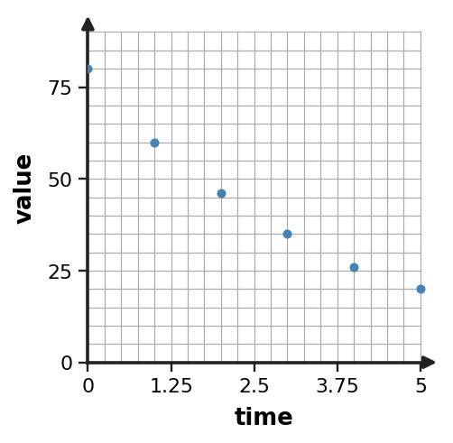
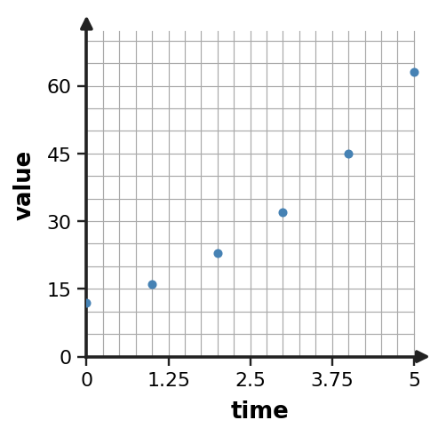

1. Build an exponential model $y=a(b)^x$ from the table. Identify both parameters.
| x | y |
|---|---|
| 0 | $\displaystyle 8$ |
| 1 | $\displaystyle 24$ |
| 2 | $\displaystyle 72$ |
| 3 | $\displaystyle 216$ |
2. A data model is $M(t)=200(\frac{9}{10})^t$. Predict $M(3)$ and interpret the result as a model prediction.
3. Use successive ratios to assess whether an exponential model is reasonable for the outputs $\displaystyle 80, 64, 51, 41$.
4. Inspect the scatter plot. Is an exponential model plausible? Describe the visual pattern and whether it suggests growth or decay.

5. The data are not exact. Judge whether an exponential model is still plausible and support the decision with approximate ratios.
| x | y |
|---|---|
| 0 | 98 |
| 1 | 122 |
| 2 | 144 |
| 3 | 174 |
| 4 | 205 |
6. The A bacteria count is modeled by $M(t)=120(1.2)^t$ for a planned observation window of 24 hours. State a meaningful contextual domain for $t$ and distinguish it from the mathematical domain of the exponential function.
7. A real-world quantity is modeled by $A(t)=150(\frac{5}{4})^t$. Interpret both 150 and the factor $\frac{5}{4}$ in context-independent language.
8. Observed data are shown below. Compare the candidate models $L(x)=12x+35$ and $E(x)=35(1.3)^x$. Which better matches the data over these inputs, and what evidence supports the choice?
| x | observed y |
|---|---|
| 0 | 35 |
| 1 | 46 |
| 2 | 59 |
| 3 | 77 |
9. For each row, compute residual = observed minus predicted. Then use the signs to describe whether the model consistently overpredicts or underpredicts.
| x | observed | predicted |
|---|---|---|
| 0 | 33.0 | 35.0 |
| 1 | 44.8 | 43.8 |
| 2 | 56.7 | 54.7 |
| 3 | 67.4 | 68.4 |
10. Estimate a reasonable exponential multiplier from the data by comparing consecutive output ratios.
| x | y |
|---|---|
| 0 | 70 |
| 1 | 91 |
| 2 | 118 |
| 3 | 154 |
11. Build an exponential model $y=a(b)^x$ from the table. Identify both parameters.
| x | y |
|---|---|
| 0 | $\displaystyle 10$ |
| 1 | $\displaystyle 15$ |
| 2 | $\displaystyle \frac{45}{2}$ |
| 3 | $\displaystyle \frac{135}{4}$ |
12. Use the model $P(t)=70(\frac{5}{4})^t$ to predict $P(4)$. State what the computed value represents.
13. Decide whether an exponential model is reasonable for the data. Use ratios rather than requiring perfect equality.
| x | y |
|---|---|
| 0 | 70 |
| 1 | 84 |
| 2 | 101 |
| 3 | 122 |
14. Inspect the scatter plot. Is an exponential model plausible? Describe the visual pattern and whether it suggests growth or decay.

15. The ratios in the data are not exactly equal. Explain whether an exponential model could still be reasonable, and name one check you would use before trusting the model.
| time | value |
|---|---|
| 0 | 60 |
| 1 | 51 |
| 2 | 44 |
| 3 | 37 |
| 4 | 32 |
16. The A savings balance is modeled by $M(t)=140(0.9)^t$ for a planned observation window of 40 years. State a meaningful contextual domain for $t$ and distinguish it from the mathematical domain of the exponential function.
17. A real-world quantity is modeled by $A(t)=175(\frac{4}{3})^t$. Interpret both 175 and the factor $\frac{4}{3}$ in context-independent language.
18. Two candidate models are $L(x)=8+8x$ and $E(x)=8(1.5)^x$. Which model better matches the observed data? Support your choice with the pattern in the table.
| x | observed y |
|---|---|
| 0 | 8 |
| 1 | 12 |
| 2 | 18 |
| 3 | 27 |
| 4 | 41 |
19. The height of an object is modeled by $H(t)=-3(t-4)^2+30$. Interpret the vertex in the context.
20. A quadratic situation is modeled by $Q(t)=-2(t-2)(t-8)$. Find the zeros and explain what the positive zeros could represent in a context where $Q(t)=0$ marks an event.
21. A quadratic model has factored form $Q(t)=-(t-0)(t-8)$ and opens downward. Identify its two zeros and the time-coordinate of its vertex. Explain how those features help describe the model.
22. Factor $x^2+7x+12$ completely.
23. Factor $\displaystyle 3x^2+8x+4$ completely.
24. Find two integers whose product is $\displaystyle 18$ and whose sum is $-9$. Explain how this pair would help factor a quadratic trinomial.